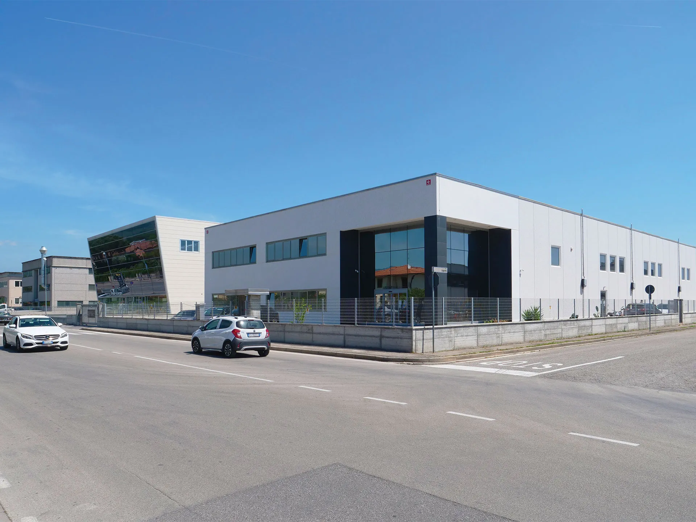
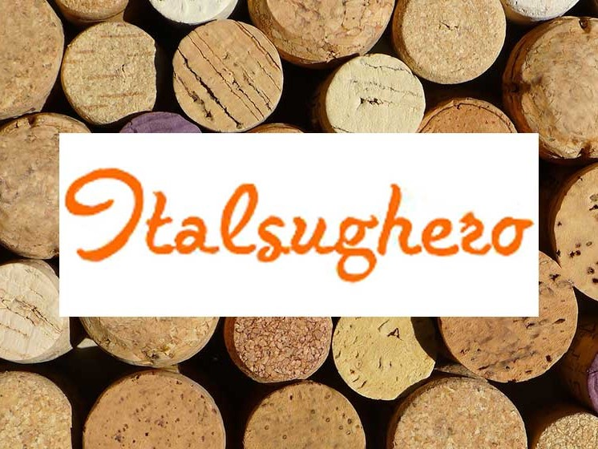
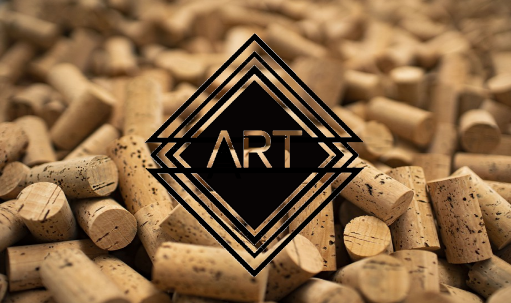

Meacci
Em 1958 na Toscana, terra rica de homens criativos e de belezas naturais, foi fundada a empresa denominada Meacci Ferdinando & C. snc. Inicialmente, o negócio girava em torno do setor metalúrgico e depois, após um curto período, transformou-se numa oficina mecânica para fabricar principalmente máquinas e acessórios para o setor enológico e azeiteiro.

Italsughero Dei Fratelli Correggio
Quando, em 1962, Primo, Battista, Quarto e Giovanni fundaram a Italsughero, o sonho de muitas gerações da família Correggi tornou-se uma realidade tangível. Eles investiram energia, entusiasmo e grande intuição empreendedora. O objetivo era constituir uma empresa tecnologicamente avançada para controlar todas as etapas do processo produtivo, desde a matéria-prima até o produto acabado.

Artigiansughero
Fundada em 1997 na região de Cervarezza, Itália, Artigiansughero é uma empresa focada na transação de rolhas de cortiça.